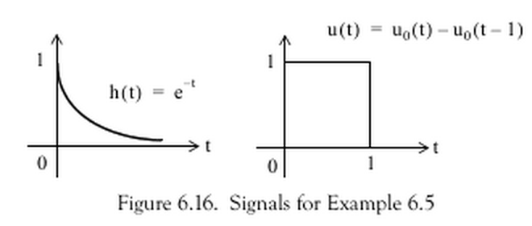
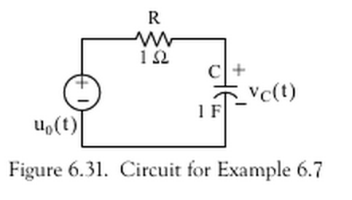

Lab 4: Convolution
Preamble
Associated Class Notes
This lab supports the materials covered in Chapter 3.5 The Impulse Response and Convolution of the course notes. You may wish to refer to worksheet 8 and worksheet 9 for additional examples to try.
Other formats
This document is available in HTML format for online viewing PDF for printing.
Acknowledgements
These examples have been adapted from Chapter 6 of Stephen Karris, Signals and Systems : With MATLAB Computing and Simulink Modeling (5th Edition)
Matlab/Simulink Concepts Introduced
In this lab you will:
- Explore convolution with the aid of an interactive MATLAB “app”
- Use the
intandheavisidefunctions from the Symbolic Toolbox to perform symbolic computation of convolution integrals. - Use
laplaceandilaplaceto solve convolution problems. - Use
ezplotto plot symbolic functions.
Preparation
Before we start today’s lab you will need to download and install the Graphical demonstration of convolution app from the GitHub respository for this module.
To install, right-click button of link as appropriate and save as to your lab04 folder. Double click the downloaded zip files to unpack.
Open and run convolutiondemo.m.
If MATLAB issues a message about the need to change the working directory or add a folder to the MATLAB path. Accept the choice given.
Lab Exercise 7: Graphical Demonstration of Convolution
In this lab exercise we will use the convolutiondemo app demonstrated in class as an aid to understanding and setting up the convolution integral for various systems including the step-response of an RL circuit.
Part 1
Set up the convolutiondemo app as described in the notes for the computation of the Convolution Integral for Example 6.4 from the textbook illustrated below. (Refer to Example 2 in the notes for the MATLAB settings).

Use the tool to confirm the convolution result given by this Matlab script: exercise7.m.
Part 2
Taking the script exercise7.m as a model. Use the convolutiondemo tool as an aid to defining the integration limits needed to find and plot the convolution integral for the example shown below (Example 6.5 from the textbook).

Part 3
Repeat the procedure for example 6.6 from the textbook.

Part 4
Adapt your procedure to determine the step response of the RC circuit given as Example 6.7 in the textbook.

Note, if you wish, Parts 2 to 5 can be done in the same Live Script file with the exercises separated by sections. Don’t forget to add explanatory text to document your work.
Lab Exercise 8: Using Laplace to Solve Convolution Problems
In this lab exercise we will demonstrate that time-convolution of a system response can be solved in the complex frequency domain using Laplace and Inverse Laplace transforms.
- Use the inverse Laplace transform function
ilaplaceto solve the step response of the RC circuit given in exercise 10 without convolution. You will need the Laplace transform of the circuit’s impulse response $h(t)$ and the unit step $u_0(t)$ (MATLABheaviside). - Plot the result using
ezplot - Confirm the result with a Simulink simulation
What to turn in
You should attach your modified versions of the example file as a single Live Script or separate scripts to the Lab 4 submission page in OneNote. Marks will be awarded according to how many of Exercises 7 (Parts 2-4) and 8 have been completed. Name each solution according to the exercise and part number: e.g. Exercise 7 scripts should be named ex7_2, ex7_3,… , ex8 etc. Use the same naming scheme for any Simulink models submitted for assessment.
If you wish, you can submit all parts of Exercise 7 in a single Live Script file (suggest ex7.mlx) providing that each part is separated by properly titled sections.
Remember, which ever method you use, you should ensure that you use the Live Script editor’s text features to add emplanatory text to your MATLAB code.
When you have finished attaching your work, complete the claim form and turn-in your assignment through Teams.
Claim
Up to 2 marks can be claimed if you complete Part 2 of Exercise 7, an addition 2 marks for is available for Parts 3 and 4 and 1 additional mark is available for completing Lab Exercise 8.
See Assessment and Feedback: Labwork Assessment for a detailed marking scheme.
The deadline for claims and submission is Midnight, 15th March.